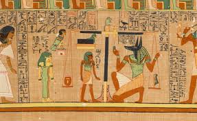
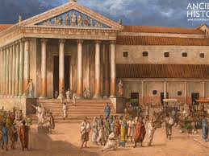
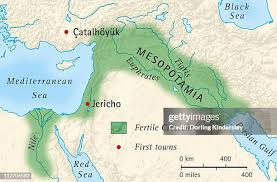

Ancient civilizations played a crucial role in shaping the foundations of the modern world. Societies such as Ancient Egypt, Mesopotamia, and Rome developed organized governments, writing systems, and laws that helped structure daily life. These civilizations were often built near rivers, which provided fertile land for agriculture and supported population growth. Through trade and communication, ideas and technologies spread between regions, allowing cultures to influence one another.
| Civilization | Location | Time Period |
|---|---|---|
| Ancient Egypt | Nile River Valley | c.3100-30 BCE |
| Mesopotamia | Tigris and Euphrates Rivers | c. 3500-500 BCE |
In addition to political and economic systems, ancient civilizations made lasting contributions to science, art, and architecture. The Egyptians built monumental pyramids, the Romans engineered roads and aqueducts, and Mesopotamians created early mathematical and astronomical knowledge. Many modern inventions, legal principles, and architectural techniques are based on ideas first developed thousands of years ago, showing how important ancient civilizations remain to human history.